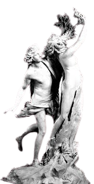

Nunca te olvidaré, Dafne -dijo con voz tristísima-. Ya no podrás ser mi esposa, pero en adelante serás mi árbol.
Y así fue. Desde aquel día, la citara y la aljaba de Apolo permanecieron colgadas de las ramas del laurel, y el dios decidió convertir aquel árbol en un símbolo de gloria, así que dispuso que las hojas del laurel sirvieran para coronar a los generales victoriosos y para honrar a los grandes poetas.
